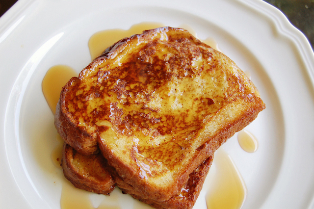

Anabolic French Toast

Description
One of the best breakfasts to have if your goal is to bulk up proteins, whilst watching your calories. Using zero calories syrup, and sweetner, this King Sized breakfast will set you up for the entire day whilst tasting delicious.
Ingredients Required for 1 Serving
- 4 Slices of Brown Bread - 280 Calories
- Egg Whites 200 ml - 190 Calories
- Cinammon 1/2 Tsp- 6 Calories
- Vanilla Extract 1 Tablespoon - 40 Calories
- Zero Calorie Sweetner 3 grams- 0 Calories
- Zero Calorie Maple Syrup - as much as you'd require.
- Oil to cook
Calorie Count = 510 Calories
Proteins in 1 Serving = 54 Grams
Steps
- First take your mixing boil, and add 200 ml of Egg Whites into it.
- Add a dash of cinnamon about 1/2 teaspoon to the mixture bowl.
- Add vanilla extract to the mixture, about 1 tablespoon
- Add 3 grams of zero calorie sweetner
- Take your slices of brown bread, and individually dip them into the mixture on both sides, until all 4 slices have been dipped into the mixture.
- On your frying pan, add a little bit of oil and fry the dipped bread one by one on both sides for approximately 3 minutes each.
- Add zero calorie maple syrup for taste, Enjoy!